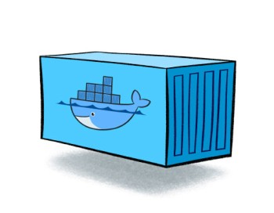

Analyse van docker
Hoe kan Docker het productie- en/of developmentproces van applicaties versnellen?
Door Thomas Vanmellaerts
Wat is Docker?

Docker is een open-source project om gemakkelijk containers te maken van ieder programma
Image?

Een docker image is een onverandelijk bestandssysteem die gebruikt om containers te maken.
Container?

Een docker container verzamelt een stukje software in een compleet bestandsysteem en bevat alles wat het nodig heeft
DockerFile
Een Dockerfile bevat alle instructies om een image te maken